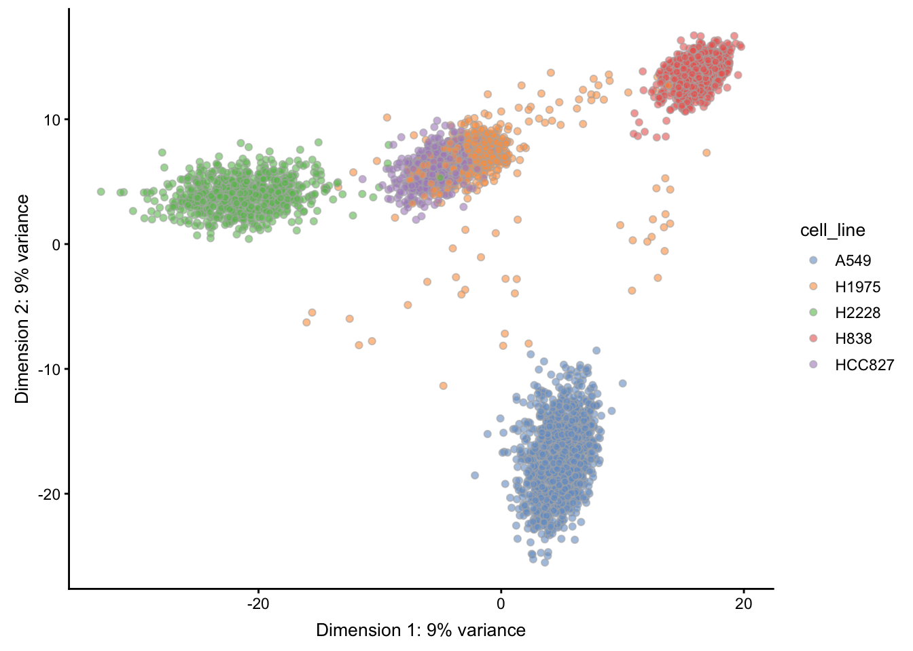
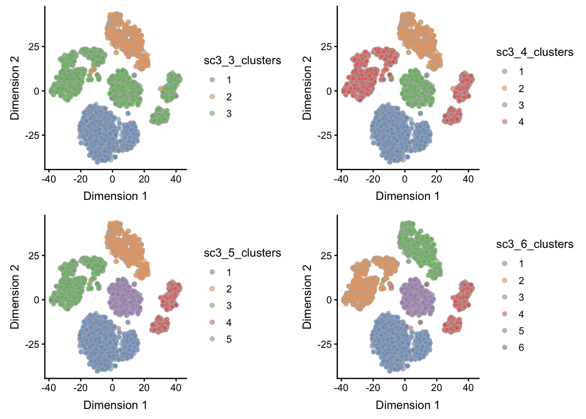

Chapter 7 Workflow: Clustering
The purpose of this case study is to demonstrate various approaches to clustering scRNA-seq datasets using R/Bioconductor packages. In this workflow, we go from preprocessing the data to clustering the data. Furthermore, we highlight methods which are especially suitable for large datasets.
Here we will be working with a dataset from the CellBench scRNA-seq benchmarking dataset collection. Specifically, we will be working with the sc_10x_5cl dataset, which contains 5 sorted cell lines that were sequencing on the 10X Genomics platform. We will use this to showcase our different clustering strategies.
7.1 Package Requirements
These packages will be required for working through the vignette, and can be installed by running the code below:
BiocManager::install(c('scater', 'scran',
'SC3', 'clusterExperiment', 'BiocNeighbors',
'BiocParallel'))
## suggested for combining plots
devtools::install_github('thomasp85/patchwork')library(scater)
library(scran)
library(SC3)
library(clusterExperiment)
library(BiocNeighbors)
library(BiocParallel)
library(patchwork)7.2 Loading the Data
To follow along with the workflow, we use the CellBench_data Github repository data folder’s sincell_with_class_5cl.RData workspace, which contains an object called sc_10x_5cl_qc. While this data will eventually be submitted to ExperimentHub, a central repository for datasets, it is currently as yet unavailable there.
For the time being, the data can be found in this book’s Github repo in the _rfiles/_data folder. The data arrives as a SingleCellExperiment class object.
sce <- readRDS("_rfiles/_data/cellbench_sce_sc_10x_5cl_qc.rds")7.3 Understanding the Data
Within the cell metadata stored in the colData slot of our sce object, we see that information regarding the cell line of origin for each cell is stored under the column cell_line, and furthermore can count the number of instances of each cell line present in the dataset as follows:
table(sce$cell_line)##
## A549 H1975 H2228 H838 HCC827
## 1244 515 751 840 568We will be using this information to illustrate our dimensionality reduction by highlighting each of the cell lines, and furthermore using this information to verify our clustering performance. While ground truth is not often known in practice, such benchmarking datasets are essential for validation of methods. While simulations are another source of establishing ground truth, this dataset is particularly appealing as it is derived under realistic experimental conditions.
7.4 Preprocessing
This dataset has already undergone cell quality control, so in this case we will skip this step (for this, we refer to the Workflow on Integrating Datasets. Thus, we will begin with the feature selection step and go on from there.
7.5 Feature Selection
In order to improve performance in terms of both speed and quality of results, we will start with defining a set of highly variable genes based on the biological coefficient of variability (see the scran vignette for details).
## Calculating highly variable genes -------------------
fit <- trendVar(sce, parametric=TRUE, use.spikes = FALSE)
dec <- decomposeVar(sce, fit)
hvg_genes <- rownames(dec[dec$FDR < 0.00001, ]) # 1874 genes
## remove uninteresting/unknown genes (ribosomal, mitochondrial)
bad_patterns <- 'RP[0-9]|^MT|[0-9][0-9][0-9][0-9]|^RPL|^RPS'
hvg_genes <- hvg_genes[!grepl(bad_patterns, hvg_genes)] # 1713 genes
## save the decomposed variance table and hvg_genes into metadata for safekeeping
metadata(sce)$hvg_genes <- hvg_genes
metadata(sce)$dec_var <- dec7.6 Dimension Reduction
Here we will use PCA to calculate the first 20 principal components with our highly variable geneset, using the irlba method for a faster approximate version of the calculation. These PCs will then form the basis of our subsequent tSNE calculation.
sce <- runPCA(sce, method = "irlba",
ncomponents = 20,
feature_set = metadata(sce)$hvg_genes)
sce <- runTSNE(sce,
perplexity = 30,
feature_set = metadata(sce)$hvg_genes)
sce <- runUMAP(sce,
n_neighbors = 15,
feature_set = metadata(sce)$hvg_genes)Here, we see that PCA nicely separates most of the cell lines, with the exception of HCC827 and H1975. On the other hand, tSNE nicely manages to separate the 5 cell lines, but interestingly produces two separate clusters for cell line H1975.
We leave it as an exercise to the interested reader to modify the essential tuning parameters, perplexity, and n_neighbors for TSNE and UMAP respectively to see how the dimensionality reduction embeddings change. Here we have used the default parameters, but simply made them explicit. Information on these and other parameters can be seen by accessing the help for each function.
Note that clustering performance is not necessarily dependent on the dimensionality reduction results (to answer this, it will depend on the specific clustering technique at hand).
However, clustering performance indeed may be reflected in the dimensionality reduction results. For example, given the PCA result, we might expect some confusion between HCC827 and H1975, and based on the UMAP results, we might possibly even see two clusters within the H1975 cell line. Note however that these dimensionality reduction embeddings are also a function of the tuning parameters noted above.
gPCA <- plotReducedDim(sce, "PCA", colour_by = "cell_line")
gTSNE <- plotReducedDim(sce, "TSNE", colour_by = "cell_line")
gUMAP <- plotReducedDim(sce, "UMAP", colour_by = "cell_line")
patchwork::wrap_plots(gPCA, gTSNE, gUMAP, heights = 1, widths = 1, ncol = 3)
7.7 Clustering
Here we highlight different frameworks for clustering. The first two, using the sc3 and clusterExperiment Bioconductor packages, are fuller implementations that can test across multiple parametrizations and furthermore inspect the quality of the clustering results. The BiocNeighbors package is briefly highlighted to show a minimal alternative to clustering that emphasizes speed.
7.7.1 SC3
The sc3 package provides a simple framework that allows users to test for many k’s, e.g. numbers of clusters, and subsequently compare the results from these differing k’s in both quantitative and qualitative ways to pick an optimal k result. Below, we first set an essential rowData feature required by the package to run. Subsequently, we run the sc3() function in this example using a subset of the data (only the highly variable genes, hvg_genes, testing k’s 3 through 6.
## SC3 requires this column to be appended
rowData(sce)$feature_symbol <- rownames(sce)
## SC3 will return an SCE object with appended "sc3_" columns
sce <- sc3(sce[metadata(sce)$hvg_genes, ],
ks = 3:6,
k_estimator = TRUE)After using sc3(), the function returns the original SingleCellExperiment object, but with new columns in colData(sce) corresponding to the different ks supplied to the function, as well as a full representation of the analysis that is stored in metadata(sce)$sc3, which includes an estimate of the optimal k (as dictated by the k_estimator = TRUE argument above).
Below, we show the clustering results of the ks we supplied, 3 through 6, shown on the TSNE representation of the data. We use the scater package function plotReducedDim() to produce the individual plots, and for the sake of this vignette, wrap them together into a single plot using the patchwork package.
## Basic code:
g3 <- plotReducedDim(sce, use_dimred = "TSNE", colour_by = "sc3_3_clusters")
g4 <- plotReducedDim(sce, use_dimred = "TSNE", colour_by = "sc3_4_clusters")
g5 <- plotReducedDim(sce, use_dimred = "TSNE", colour_by = "sc3_5_clusters")
g6 <- plotReducedDim(sce, use_dimred = "TSNE", colour_by = "sc3_6_clusters")
patchwork::wrap_plots(g3, g4, g5, g6, widths = 1, heights = 1, ncol = 1)
The sc3 package contains many more utilities for exploring the stability of clustering and can even produce differential expression analysis results using the biology = TRUE argument within the sc3() function. We leave it to the interested reader to learn more about sc3 via their vignette.
7.7.2 clusterExperiment
The clusterExperiment package uses the function RSEC() to calculate clusters across various parametrizations, and contains multiple parameters to do so. Here, we specify the parametrizations to iterate over using the alphas and k0s arguments below. We refer the reader to the help page for ?RSEC to learn more about the different parameters. In the end, this exhaustive exercise is used to ultimately determine a consensus clustering that combines the information learned from the various parametrizations.
rsec <- RSEC(sce[metadata(sce)$hvg_genes, ],
reduceMethod = "PCA",
nReducedDims = 20,
alphas = c(0.1, 0.3), k0s = 4:6,
consensusMinSize = 50)
metadata(sce)$rsec <- rsec
colData(sce)$rsec_consensus_clusters <- as.factor(clusterMatrix(rsec)$mergeClusters)Once again, we refer the interested reader to the vignette for clusterExperiment to learn more about extended functionality for visualizing the data and about the specifics of the clustering workflow.
7.7.3 BiocNeighbors
The BiocNeighbors package provides a lower-level method for clustering of data. Under the hood, it provides various types of clustering algorithms, as specified through the BNPARAM class object. This BNPARAM object can be passed into the BiocNeighbors clustering function, findKNN(), as well as other functions that support BNPARAM.
The BiocNeighbors packaged is especially designed for developers to enable a unified interface for clustering algorithm specification, allowing for the separation of clustering functionality from the main function.